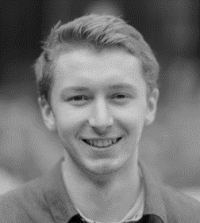
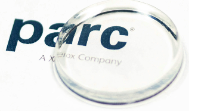

2021–present
Carnegie Mellon University
PhD, Biomedical Engineering
I'm currently pursuing a Ph.D. in Biomedical Engineering at Carnegie Mellon University, co-advised by Dr. Jana Kainerstorfer and Dr. Barbara Shinn-Cunningham (alongside Dr. Abigail Noyce). My research lies at the intersection of neuroimaging methods, machine learning for signal processing, and sensory neuroscience. I primarily have studied attention and working memory using non-invasive methods such as EEG and NIRS.
I pivoted to neural engineering after completing my undergraduate degree. During that time, I worked on research projects involving cellulose-based materials under Dr. Michael Tam, artificial kidney filter development at a startup, photonic catalytic materials at Harvard University under Dr. Joanna Aizenberg, and optically transparent window insulation at Palo Alto Research Center (PARC).
I've had a longstanding interest in neuroscience. While working in materials science, I also became interested in materials for neural interfaces, which provided a connection between my engineering background and neuroscience. In 2020, I joined the Laboratory for Multisensory Neuroscience at Carnegie Mellon University, and began my Ph.D. the following year.

PhD, Biomedical Engineering
BASc, Honours Nanotechnology Engineering
Graduated with distinction.
PhD Research Assistant · August 2021–present
Research on attention and non-invasive brain imaging, including the development of computational methods for diffuse optical tomography, measurement prediction, and statistical analysis.
Research Assistant · January 2020–August 2021
Worked in the Laboratory for Multisensory Neuroscience, studying attention and the effects of distractor probabilities on task performance.
Research Assistant / Intern · January–August 2018
Worked on the development of transparent thermal insulation and other materials intended to improve energy efficiency.

Undergraduate Research Fellow · August 2016–April 2017
Studied photonic and hybrid organic–inorganic materials for catalytic applications in Joanna Aizenberg’s laboratory.

Undergraduate R&D Engineer · February–April 2016
Worked on the development of a prototype renal-replacement device.
Undergraduate Research Assistant · May–December 2015
Conducted research in the Tam group on materials for corrosion protection, catalysis, and radical scavenging.
My doctoral research lies at the intersection of neuroimaging methods, machine learning for signal processing, and sensory neuroscience. I work primarily with electroencephalography (EEG) and functional near-infrared spectroscopy (fNIRS), combining experimental measurements with computational analyses
My recent work includes a framework for predicting fNIRS/DOT measurements and estimating statistical power, published in Imaging Neuroscience with accompanying open-source software. I've also been involved in collaborative studies using DOT to improve EEG source localization.
My current work focuses on applying some of the methodological advancements we've made to non-invasively study attention and working memory.
I'm particularly interested in how attention interacts with sensory information, how that interaction may shape cognitive states, and how we can reliably measure these states non-invasively.
I also have developed a strong interest in statistical methods, machine learning and signal processing, which motivates and enables much of my research.
Ultimately, I aim to make non-invasive study of cognition more accessible for certain subject populations or practical applications.
Outside of research, I spend my free time playing hockey (CMU club team and Penguins adult league) and practicing piano.